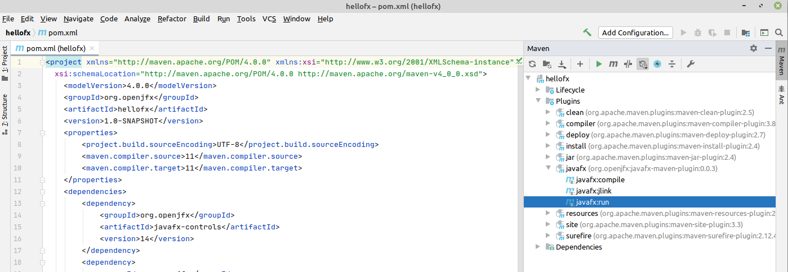
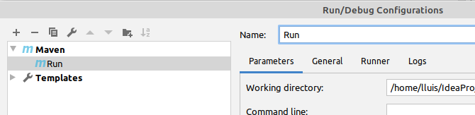

En aquesta secció procedim a explicar com crear una aplicació JavaFX en Intellij IDEA. Per el nostre projecte no modular, utilitzarem les eines de Maven per construir-lo i executar-lo.
Seleccione Arxiu -> Nou -> Projecte -> Maven i active Create from archetype. Si l’arquetip JavaFX encara no està instal·lat, seleccione Add archetype ... i configure el groupId (org.openjfx), el artifactId (javafx-maven-archetypes) i la versió (0.0.4), i pressione OK. Arquetip JavaFX
una vegada instal·lat, seleccionem l’artquetip:

Proporcione el groupId, com org.openjfx, el artifactId, com hellofx.
Seleccione l’arquetip artifactId, entre javafx-archetype-fxml o javafx-archetype-simple, segons l’ús de FXML o no en el seu projecte.
També pot crear una propietat per a la versió javafx (javafx-version) i establir-la en 14.
Pot obrir la finestra Projectes de Maven i fer clic en HelloFX -> Plugins -> compiler -> compiler:compile per a compilar el projecte, i fer clic en HelloFX -> Plugins -> javafx -> javafx:run per a executar el projecte.

Per crear una forma més comoda d’executar la nostra aplicacció, accedim a l’opció de configuració de Run/debug  . Una vegada dintre afegim una nova configuració.
. Una vegada dintre afegim una nova configuració.

li modifiquem el nom.

en la mateixa finestra, li afegim una nova tasca per executar. en la que li indiqiem que execute en linea de comandos javafx:compile. i en la configuració li indiquem javafx:run.

Ara ja ens deixa executar debug/run.